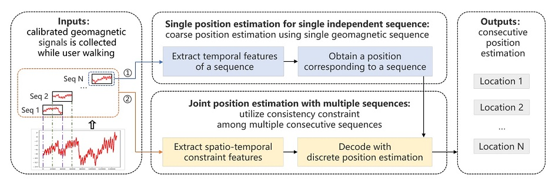
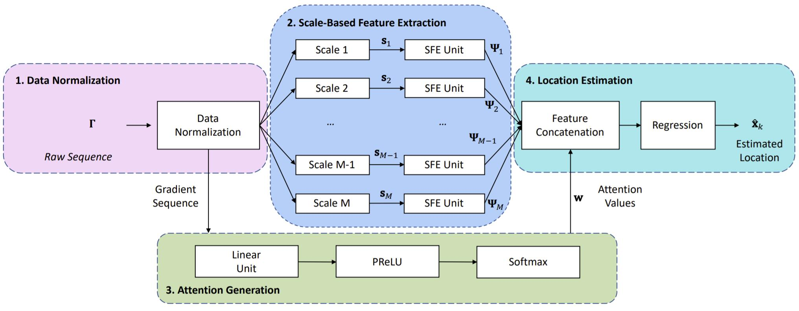
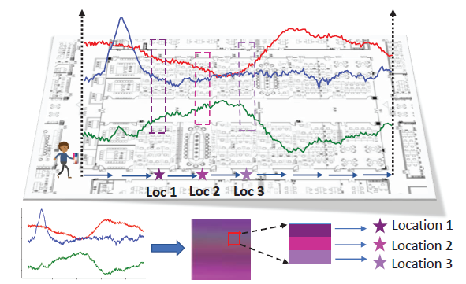
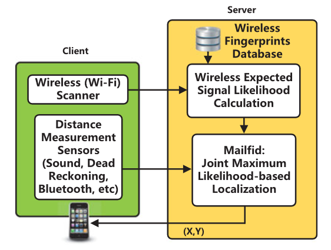
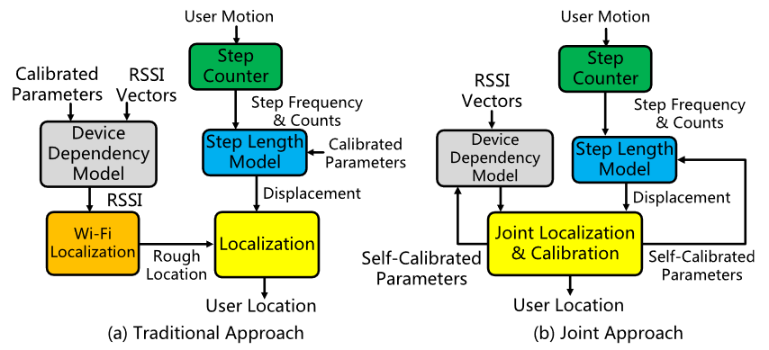
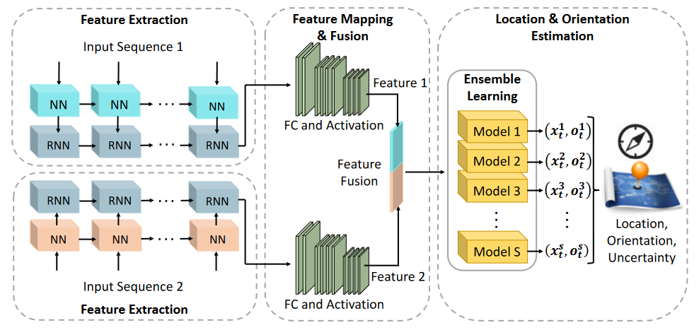
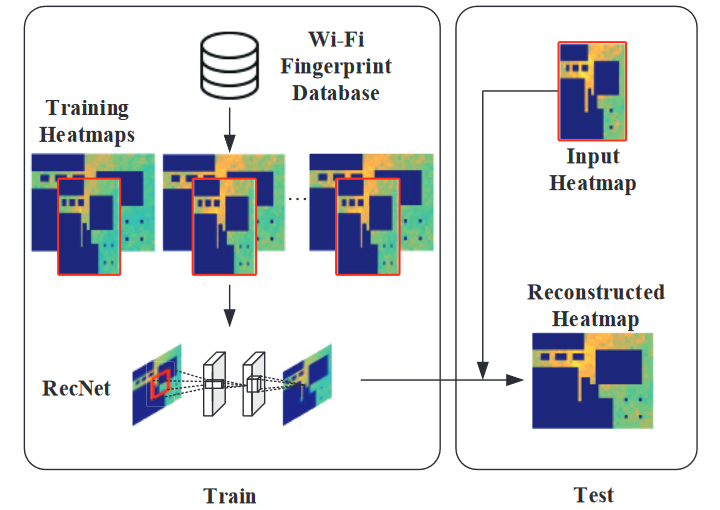

|
|
简介
精准的室内定位技术对于安防、医疗和商业等领域具有重要的意义。
在复杂多变的室内环境中，实现同时满足精准与鲁棒的定位能力、低成本的部署和运维、简单易行的定位方式，具有极大挑战。
研究团队在室内多模态室内定位和定位信号地图方面进行了深入探索，提出了多模态融合定位算法与低成本室内定位地图重建技术。
随着5G逐渐应用和深度学习技术的发展，研究团队结合深度学习技术，基于移动大数据进行融合5G的室内定位技术探索。
针对室内信号难于采集的问题，研究团队基于无人车、无人机平台，设计低成本的室内多模态定位地图构建算法，
降低定位系统实施与维护的工作量。
1.剑桥大学PoseNet视觉定位项目（http://mi.eng.cam.ac.uk/projects/relocalisation/）
2.微软研究院EZ Wi-Fi室内定位（https://www.microsoft.com/en-us/research/project/ez-localization/）
3.谷歌VPS视觉定位项目简介（https://www.ccf.org.cn/c/2017-05-23/595980.shtml）
视觉定位
商业地产场景中存在大量视觉信息，如店铺招牌，海报，张贴画等等。这些随处可见的视觉信息为室内定位提供了丰富的特征。 然而，许多基于视觉的定位研究存在操作复杂，定位精度低的缺点，阻碍了视觉定位的应用。 针对以上问题，本团队基于场地中已有的视觉信息，结合传感器与场地结构约束，进行易操作和高精度定位。 在商场和美食广场的大规模实验结果显示，所研究方法具有较高的精度。

|
Resource efficient and Automated Image-based Indoor Localization
Qun Niu, Mingkuan Li, Suining He, Chengying Gao*, S.-H. Gary Chan and Xiaonan Luo
|

|
SweepLoc: Automatic Video-based Indoor Localization by Camera Sweeping
Mingkuan Li, Ning Liu*, Qun Niu, Chang Liu, S.-H. Gary Chan, Chengying Gao
|
地磁定位
地球磁场由地球产生，在室内场景中普遍存在。加之室内存在较多的铁磁性物体干扰，增加了地磁强度的扰动，使得地磁定位成为可能。
然后，地磁信号空间区分度较低，铁磁性干扰源分布较为稀疏，导致地磁位置特征区分度不足，进而降低定位精度。
针对以上问题，项目组研究了基于地磁序列的精准定位算法。分别研究了基于地磁序列时空表征的定位算法和多尺度注意力引导的地磁序列定位算法。
项目组在实验室和地下停车场中进行了大量实验，证明了提出算法在测试场景中的有效性。
|  |
Efficient Indoor Localization with Multiple Consecutive Geomagnetic Sequences
Hui Zhuang, Tao He, Qun Niu and Ning Liu*
|
|  |
MAIL: Multi-Scale Attention-Guided Indoor Localization Using Geomagnetic Sequences
Qun Niu, Tao He, Ning Liu, Suining He, Xiaonan Luo, Fan Zhou
|
|  |
Indoor Localization with Spatial and Temporal Representations of Signal Sequences
Tao He, Qun Niu, Suining He and Ning Liu
|
Wi-Fi指纹定位
Wi-Fi路由器在室内场景中大量部署，基于Wi-Fi指纹的定位算法在学术界和产业界皆获得了广泛关注。
然而，由于信号多径效应及信号衰减，现有基于Wi-Fi指纹的定位方法在室内场景中难以取得稳定的定位精度。
针对以上问题，项目组分别研究了结合计步器的Wi-Fi指纹定位算法和距离约束的定位算法，同时考虑设备和用户差异并进行精准定位。
大量实验结果证明了所提出算法的有效性。
|  |
Maxlifd: Joint Maximum Likelihood Localization Fusing Fingerprints and Mutual Distances
Suining He, S.-H. Gary Chan, Lei Yu and Ning Liu*
|
|  |
SLAC: Calibration-Free Pedometer-Fingerprint Fusion for Indoor Localization
Suining He, S.-H. Gary Chan, Lei Yu and Ning Liu*
|
多特征融合定位
针对单一信号在复杂场景中存在特征不足和定位误差大的问题，项目组研究了基于特征融合的定位算法。 通过循环神经网络从瞬时信号及序列信号中提取信号特征，基于集成学习融合多模型预测结果，有效提升定位精度。
|  |
DeepNavi: A Deep Signal-Fusion Framework for Accurate and Applicable Indoor Navigation
Qun Niu, Ning Liu*, Jianjun Huang, Yangze Luo, Suining He, Tao He, S.-H. Chan and Xiaonan Luo
|
指纹数据库增量重建
在长期部署中，室内路由器由于功率变化，遮挡等因素影响，导致Wi-Fi指纹发生变化，降低定位精度。由此引发定位指纹数据库的更新耗时费力。 项目组将离散的指纹转换为信号强度热力图，基于稀疏采集的指纹构造低分辨率热力图，基于超分辨率重建的思路设计高、低分辨率指纹数据库映射模型， 通过稀疏采集的指纹更新指纹数据库，降低指纹数据库的维护成本。
|  |
RecNet: A Convolutional Network for Efficient Radiomap Reconstruction
Q. Niu, Y. Nie, S. He, N. Liu and X. Luo
|